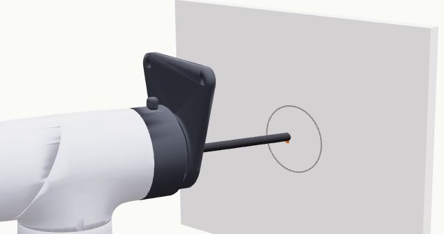
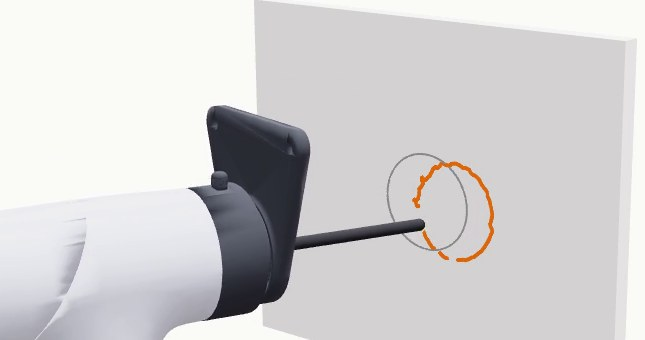
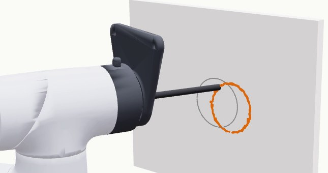
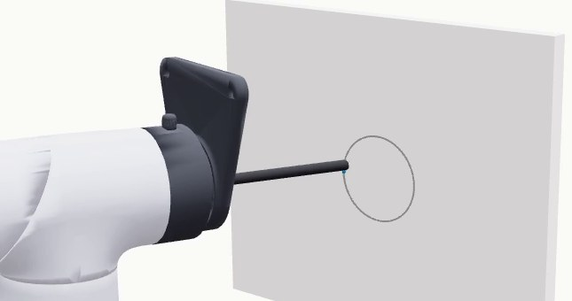
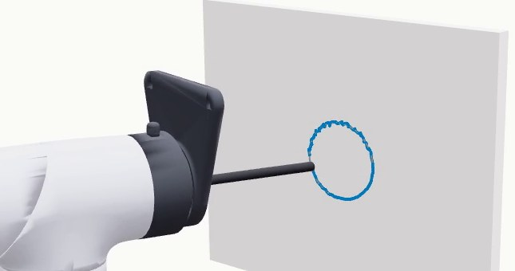
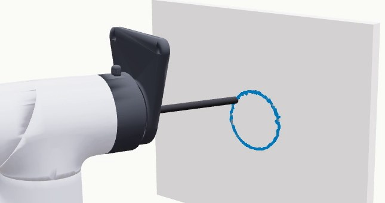
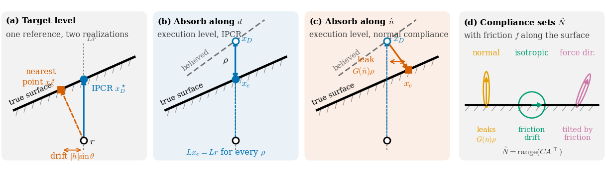
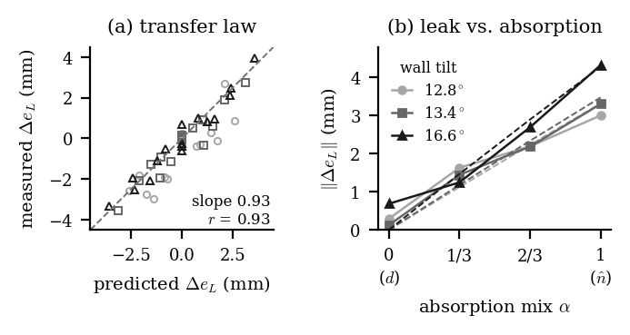
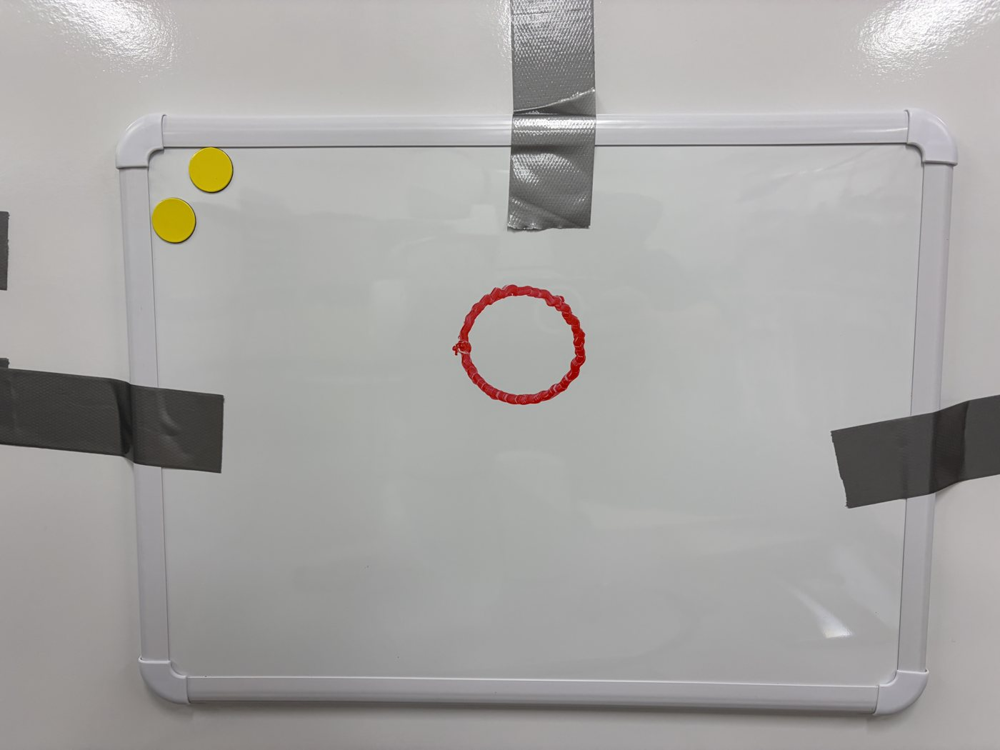
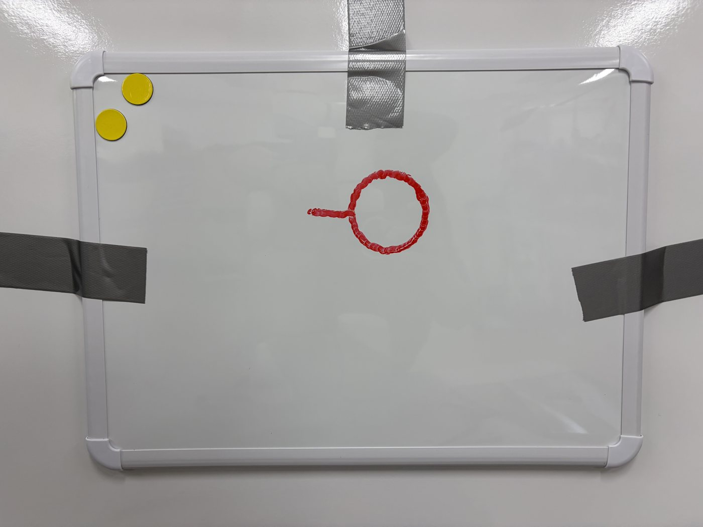

Nearest pointgiven the board's true normal · keeps contact, moves the figure

touch→

first pass→

end✕moved — mm
same board, same reference circle, same robot; only the realization rule differs
IPCR (ours)no normal, no force sensor · keeps contact and the figure

touch→

first pass→

end✓moved — mm
Real robot, board tilted 16.5°, unknown to the controller. Scenes are rendered from the logged joint angles; the ink is where the pen tip was on the measured board.
TL;DRWhen a robot meets a surface it did not expect, restoring contact is easy. The nearest point gives away coordinates the task meant to keep. IPCR lets the task decide: correct the target only inside its yield subspace and absorb what the estimate misses there too.
—less figure shift than the nearest point given the true normal (real robot)
—of the predicted drift, measured on the real robot before any fitting
—leak of the prior-system structure under a 10 mm offset, vs 0.02 mm for IPCR
0force/torque sensors: joint sensing only
Abstract
When a contact surface differs from the one assumed, the way a controller restores feasibility decides which parts of the task survive. The common choice, the nearest feasible point with compliance along the normal, keeps contact and regulates force yet shifts a drawn figure and pushes a carried box off its path. Intent-preserving constraint realization (IPCR) lets the task decide through a yield subspace \(\mathcal{D}\) and preserved coordinates \(Lx\) with \(LD=0\); the nearest-point rule is the case \(\mathcal{D}=\operatorname{span}(n)\). A correction outside \(\mathcal{D}\) drifts by a principal-angle amount, and a residual \(\rho\) left to the servo reaches \(Lx\) through \(G(\hat N)=-L\hat N(A\hat N)^{-1}\). One controller, from joint sensing alone, re-anchors its surface belief at contact to reduce \(\rho\) and absorbs inside \(\ker L\). On a physical arm drawing on tilted boards, the figure moved 0.38–0.49 mm under IPCR against 11.3–25.2 mm under the nearest-point rule given the measured normal, 0.98–1.01 of the predicted drift, and a task-aware target with normal absorption, the structure of prior drawing systems, leaked 2.98 mm under a 10 mm surface offset, 1.00 of prediction, against 0.02 mm. In simulation, structures from the literature given the true normal and an ideal force sensor moved the figure 10–23 times more than IPCR, drift on new boards was predicted before the runs to within 6.3 %, and changing only the task switched a carried box between sideways yield and turning. Yielding along \(\mathcal{D}\) adds a depth-rate demand that our implementation meets only at low speed, and contact-force peaks above 30 N persisted.
Video
Main filmproblem → the two levels → drawing → transport → real robot after the final runs
Drawing, real robot (board 16.5°): nearest point given the true normal vs IPCR, both passes at ×10. Rendered from the logged joint angles.
Carrying a box past an unknown wallU-fixed · U-yaw · nearest point after the final runs
Same controller, only the task changes: yield sideways or turn.
Problem
Robot references come from nominal geometry, and the real surface differs. On contact the reference is infeasible and the controller must move it. Many directions restore contact and regulate force equally well, and they do not give the same result.
The usual answer, the nearest point, moves the reference along the surface normal. On a tilted board that slides the figure the task meant to keep in place, by \(|h|\sin\theta\), even with the exact normal. Tracking and force errors stay small, because they are measured against the corrected point. A contact report does not show it.
board tilt θdepth e
Method
The task names a yield subspace \(\mathcal{D}\), the directions in which motion may depart from the reference, and preserved coordinates \(y = Lx\) with \(LD = 0\). IPCR enforces this at two levels, inside one controller that uses joint sensing only.
(A) TARGET LEVEL
Correct only inside \(\mathcal{D}\)
The unique feasible point that keeps \(Lx\):
\(x_D^\star = r + D(\hat A D)^{-1}(\hat b - \hat A r)\)
Any other correction drifts by a principal-angle amount; the nearest point is the case \(\mathcal{D}=\operatorname{span}(n)\).
→
(B) EXECUTION LEVEL
Absorb the residual inside \(\ker L\)
What the estimate misses reaches \(Lx\) by a computable law:
It vanishes for every residual iff the absorption direction lies in \(\ker L\).
→
(C) ONE CONTROLLER
Joint sensing only
Re-anchors its surface belief at contact to shrink \(\rho\), and absorbs along \(\mathcal{D}\), separate from the force direction.
no F/T sensorno surface modelno probing phase
Execution level · try it
Where does the servo absorb what the estimate missed?
absorption mix αresidual ρ

Figure from the paper. (a) Target level: the nearest point drifts by |h| sin θ; the IPCR target corrects only along d. (b, c) Execution level: absorbing the residual along d keeps the preserved coordinates; along the estimated normal the same target leaks. (d) Compliance sets the absorption direction.
Results
(A)Drawing on unknown tilted boards
Pick a shape and a board. Hardware cells show the real robot; the others are simulated on the same measured boards. Numbers are the mean shift of the drawn figure in the kept coordinates.
In simulation: same speed, same coverage, different placement
IPCR against the nearest point given the true normal, at 5 mm/s through both strokes on four boards (Gazebo and ROS 2 with a plant identified on the physical CR3A). Both arms kept contact on 98–100 % of the figure, with no missing arc over 10°. Every registered criterion passed.
● IPCR ■ nearest point with the true normal. Per-run shifts were 0.23–0.94 mm and 10.5–18.2 mm, so averaging did not hide opposing errors. IPCR's shape error was also the smaller (0.9–1.1 mm vs 1.0–2.4 mm).
Against execution structures from the literature
Each rival runs on the same stack and pen with its most favorable sensing. IPCR has neither the true normal nor a force sensor.
The two marks per row are the 8.5° and 15.6° boards (10 mm/s, 5 runs per cell). Motion-stiff compliance follows Shi et al. (2026) and ran in a later registered set; IPCR rerun on that set moved the figure 0.76 and 0.98 mm. On the role-reversal test, a task defined on the surface, the nearest point was the faithful rule (0.72–1.43 mm) and IPCR with a depth yield was not (10.6–39.1 mm): the right rule is whichever matches the task's yield subspace.
Curved boards and a biased normal
Theorem 1 needs no planarity. With only a planar normal estimate, IPCR kept place and size on spheres of radius 150 and 250 mm and cylinders of 250 mm: shift 0.44–0.68 mm, scale 1.000–1.009. The nearest point given the true local normal moved the figure 15.5–21.9 mm on the spheres and the vertical cylinder. Rotating the normal estimate by ±3° moved the nearest-point figure by 8.2 mm and IPCR's by 0.27 mm, since IPCR's target does not use the normal for the preserved coordinates.
(B)Is a task-aware target enough? No.
In simulation we crossed the target rule with the absorption direction, all with the true normal, and injected a residual by offsetting the believed plane by 10 mm. A task-aware target with normal absorption is the structure of the closest drawing systems. It matched IPCR when no residual was injected (0.28–0.69 mm), and leaked as predicted once one was:
target along n (nearest point)
target along d (task-aware)
absorb along d
2.65
predicted 2.69
0.35
predicted 0 · IPCR
absorb along n
0.52
predicted 0
2.65
predicted 2.69
≈ closest prior drawing systems
Leak of the figure (mm) under a 10 mm believed-plane offset, 15.6° board, mean of 4 runs (Table III of the paper, hold on). Across offsets of 2–20 mm the normal-absorption leak grew with slope 0.93 and 0.87 against the prediction, while IPCR's stayed at or below 0.65 mm.

The leakage law, measured: 72 registered runs on 3 walls under a ±15 mm residual. The change of the preserved coordinates follows G(N̂)ρ with slope 0.93 (r = 0.93), and falls from 3.0–4.3 mm with absorption along the normal (α = 1) to 0.12–0.69 mm along the yield direction (α = 0).
(C)Same controller, different task: carrying a box
Replay of three logged simulation runs, rendered in your browser from the logged joint angles: an unmodeled 250×200×150 mm, 1.5 kg box is carried 200 mm along a straight path, and a board tilted 20° intrudes 20 mm into it. The only difference between the two IPCR runs is the task specification; the readouts are computed from each run's log, and the coloured line on the table is the path of the box centre. Drag to orbit.
Over 108 simulated runs (boards at 8.5°, 20° and 30°, friction 0 and 0.3, payloads 0.5–2.5 kg), the task “keep yaw” kept yaw within 1° in 54/54 runs and yielded a median 20.0 mm, the geometric requirement; “yaw free” turned in 54/54 runs (median −8.9°) and yielded less in 18/18 conditions. Against the nearest point with the true normal, IPCR's progress error stayed at its free-motion level (2.7–3.1 mm), while the nearest point added the amount predicted from geometry alone:
The 8.5° magnitude missed its registered criterion; at that tilt the metric is dominated by free-motion tracking.
More boxes and obstacles (pending)
Box shapes × unknown obstacles. U-fixed keeps yaw and yields sideways, U-yaw turns, the nearest point is pushed back along its path. Final runs after the controller freeze.
(D)Predicted before the runs
Nearest point: measured shift vs the shift predicted from the board pose and the reference alone (\(|h|\sin\theta\) per tick), per hardware board. IPCR is predicted to stay at 0.
Hardware
Dobot CR3A, spring-loaded pen 105 mm from the flange, 5 mm/s. Each board was placed at a pose unknown to the controller; its plane was measured afterwards from the pen-tip contacts and used only for evaluation and as the nearest point's normal.
board
tilt
IPCR
nearest point
NP / pred.
Three runs per arm and board, GAP 1 mm (hw_eval.py).

Ink, IPCR (board 17.4°)

Ink, nearest point (board 17.4°; the short stroke is the approach)
Limitations
Speed costs coverage. Keeping the frontal motion exact needs a depth rate of up to \(v\tan\theta\); our implementation meets it only at low speed.
Force is regulated, not bounded. Contact-force peaks above 30 N persisted, and IPCR's were not lower than the nearest point's.
Friction. In simulation, board friction of 0.45 and above jammed every arm and every shape.
Absorption matters only when a residual persists. Residuals arising on their own were small on our boards; the difference between absorption directions was shown under injected offsets.
Scope. The guarantee covers the task-selected coordinates and presumes a correctly specified \((\mathcal{D}, L)\). A curved surface's local attitude is not tracked. On hardware we have so far run the pen task (circle on three boards and the absorption test); other shapes and box transport on hardware are pending.
Citation
@unpublished{kim2026ipcr,
title = {Feasible Is Not Faithful: Intent-Preserving Constraint
Realization for Contact Tasks on Unknown Surfaces},
author = {Kim, Jeonghyeon and Park, Shinsuk},
note = {Manuscript in preparation},
year = {2026}
}